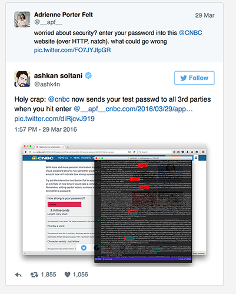
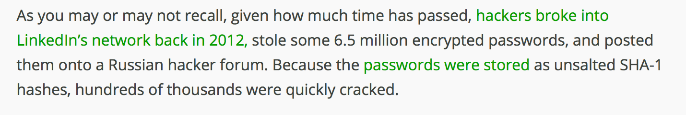
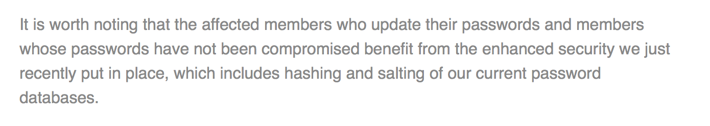

People, Passwords and Process
No witty sub-title
Curated by Alex Juarez (@mralexjuarez)Agenda
- Why this topic
- People
- Passwords
- Process
- Q & A
So Why this Topic?
- Back to Basics
- I like sharing knowledge
So Why this Topic?
If you can't explain it simply, you don't understand it well enough.
-Albert Einstein
I am not an expert!
People
Usually we are the problem
Passwords can be leaked
 http://boingboing.net/2016/03/30/cnbcs-secure-password-tutori.html
http://boingboing.net/2016/03/30/cnbcs-secure-password-tutori.html
Passwords can be leaked
 http://motherboard.vice.com/read/cnbc-tried-and-massively-failed-to-teach-people-about-password-security117 Million
The number of linkedin passwords leaked
June 5th 2012

The Passwords were easily cracked
From TechCrunch From linkedin 
| Rank | Password | Frequency |
| 1 | 123456 | 753,305 |
| 2 | 172,523 | |
| 3 | password | 144,458 |
| 4 | 123456789 | 94,314 |
| 5 | 12345678 | 63,769 |
source https://www.leakedsource.com/blog/linkedin
Social Engineering
We just want to be helpful. It is in our nature.
We suck!
Passwords
An Intro to Account/Password Management
Accounts/Passwords
- Files in Play
- Commands for Account Management
- PAM (briefly)
Files in Play
- /etc/passwd
- /etc/shadow
- /var/log/secure
- /var/log/{wtmp,btmp}
/etc/passwd
 USERNAME:"PASSWORD":UID:GID:COMMENT FIELD:HOME DIR:SHELL
USERNAME:"PASSWORD":UID:GID:COMMENT FIELD:HOME DIR:SHELL
- Accessible by everybody
- Does not actually contain the password
/etc/shadow

- Username
- Password
- Last password change
- Minimum
- Maximum
- Warn
- Inactive
- Expire
/var/log/secure
Contains some of the following- User attempts to connect
- A user gaining sudo access
- User disconnects
Commands for Account Management
# useradd joeracker # passwd joeracker Changing password for user joeracker. New password: BAD PASSWORD: it is based on a dictionary word BAD PASSWORD: is too simple
Getting Account Information
# id joeracker uid=501(joeracker) gid=502(joeracker) groups=502(joeracker) # finger root Login: root Name: root Directory: /root Shell: /bin/bash Last login Sat Aug 29 16:00 2015 (EDT) on pts/0 from 10.0.2.2 No mail. No Plan.
Getting Password Information
# passwd -S joeracker joeracker PS 2016-06-08 0 99999 7 -1 (Password set, SHA512 crypt.) # chage -l joeracker Last password change : Jun 09, 2016 Password expires : never Password inactive : never Account expires : never Minimum number of days between password change : 0 Maximum number of days between password change : 99999 Number of days of warning before password expires : 7
passwd
Change a user's password
passwd [USER]
Lock / Unlock a user account
passwd -l [USER] passwd -u [USER]
Expire a user account
passwd -e [USER]
chage
Force a user to change their password on the next login
chage -d 0 [USER]
Expire a user account
chage -E $(date -d "1 week" +%F)[USER]
List Account Info
chage -l [USER]
last / lastb
last - Show the last users logged in. Writs to /var/log/wtmp
lastb - Show the last bad attempts /var/log/btmp
PAM (Briefly)
- Pluggable Authentication Modules
- Single Source of Authentication
- Files in /etc/pam.d
PAM (Briefly)
module_interface control_flag module_name module_arguments
#%PAM-1.0 auth include system-auth account include system-auth password substack system-auth -password optional pam_gnome_keyring.so
PAM (Briefly) - Control Flags
required — The module result must be successful for authentication to continue. If the test fails at this point, the user is not notified until the results of all module tests that reference that interface are complete.
source: https://access.redhat.com/documentation/en-US/Red_Hat_Enterprise_Linux/6/html/Managing_Smart_Cards/PAM_Configuration_Files.htmlPAM (Briefly) - Control Flags
requisite — The module result must be successful for authentication to continue. However, if a test fails at this point, the user is notified immediately with a message reflecting the first failed required or requisite module test.
source: https://access.redhat.com/documentation/en-US/Red_Hat_Enterprise_Linux/6/html/Managing_Smart_Cards/PAM_Configuration_Files.htmlPAM (Briefly) - Control Flags
sufficient — The module result is ignored if it fails. However, if the result of a module flagged sufficient is successful and no previous modules flagged required have failed, then no other results are required and the user is authenticated to the service.
source: https://access.redhat.com/documentation/en-US/Red_Hat_Enterprise_Linux/6/html/Managing_Smart_Cards/PAM_Configuration_Files.htmlPAM (Briefly) - Control Flags
optional — The module result is ignored. A module flagged as optional only becomes necessary for successful authentication when no other modules reference the interface.
source: https://access.redhat.com/documentation/en-US/Red_Hat_Enterprise_Linux/6/html/Managing_Smart_Cards/PAM_Configuration_Files.htmlPAM (Briefly) - Control Flags
include — Unlike the other controls, this does not relate to how the module result is handled. This flag pulls in all lines in the configuration file which match the given parameter and appends them as an argument to the module.
source: https://access.redhat.com/documentation/en-US/Red_Hat_Enterprise_Linux/6/html/Managing_Smart_Cards/PAM_Configuration_Files.html/etc/pam.d/system-auth
#%PAM-1.0 # This file is auto-generated. # User changes will be destroyed the next time authconfig is run. auth required pam_env.so auth sufficient pam_unix.so nullok try_first_pass auth requisite pam_succeed_if.so uid >= 500 quiet auth required pam_deny.so
More PAM Info
/usr/share/doc/pam-1.1.1/
pam_cracklib
password required pam_cracklib.so difok=3 minlen=15 dcredit= 2 ocredit=2
- Length
- Case
- Character Type
/usr/share/doc/pam-1.1.1/txts/README.pam_cracklib
The rest is magic!

Process
Intro to password "recovery"
Rainbow Table
A table of hashed passwords that is pre-computed. Saving on CPU using more space.
Brute Force
Much simpler, computing the hash every time. More CPU intensive.
Un-salted Passwords
Remember the linkedin un-salted passwords thing?
Seasoned Passwords
$6$3WmTNdwy$S5AJoTrQtvRcwPqjw/E0xyfvqAO.xMkoJ3S2dee/orSjCCa6wPE0UVydbiiZspnCpcRX.epjGWdj6mew9NDaV1
- 6
- 3WmTNdwy
- S5AJoTrQtvRcwPqjw/E0xyfvqAO.xMkoJ3S2dee/orSjCCa6wPE0UVydbiiZspnCpcRX.epjGWdj6mew9NDaV1
Tools
Quick Demo
John the RipperIn Closing...
Contact Information
This hCard created with the hCard creator.
A short bio
Alex Juarez is a Principal Engineer at Rackspace, touting 8 years with the company. Alex enjoys all things Linux, especially training and mentoring others, and is incredibly qualified to do so as an RHCA/RHCI. When Alex isn't helping others he's crafting killer cocktails and finding the best spots to grub in San Antonio.
Thanks @jilljubsQ & A
(Or we can talk about Whiskey)